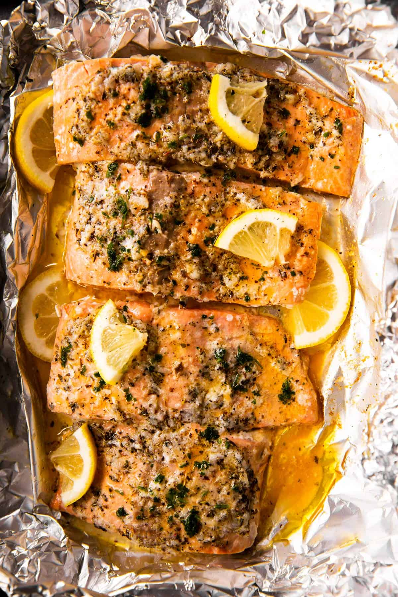

Garlic Butter Salmon Recipe

Description
Put a quick dinner on the table with this Baked Lemon Garlic Butter Salmon recipe. It’s easy to make and tastes delicious – perfect for busy weeknights!
Ingredients
- 1.5 lbs salmon fillet
- ¼ tsp salt
- black pepper to taste
- 1 tbsp olive oil
- 3 cloves garlic, finely minced
- 1 tsp Italian seasoning or parsley
- ½ lemon juice
- 4 tbsp salted butter, diced
- Spinach or leafy greens (optional)
Steps
- Preheat oven to 400°F. Place a large piece of aluminum foil in a large rimmed baking dish that will comfortably hold all of your salmon.
- Lightly grease the foil with olive oil. Place the salmon fillets on top. Add spinach or leafy greens (optional). Drizzle with 1 tablespoon olive oil and evenly scatter garlic on top. Drizzle with lemon juice and sprinkle with Italian seasoning, salt and pepper. Dot with butter. Seal foil over salmon.
- Bake for 10-15 minutes (or twice as long if salmon is frozen) or until salmon flakes easily. Serve immediately.